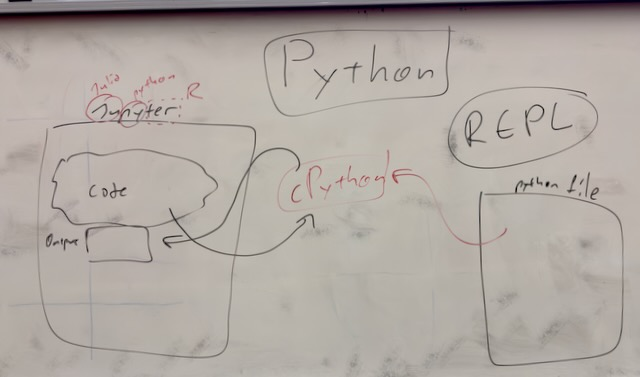

2026-02-27
In class today I showed you a presentation on slopes and I discussed
the fourth chapter of the part of the book we're using.
You can see a recording of this here: https://cardiff.cloud.panopto.eu/Panopto/Pages/Viewer.aspx?id=039c6cdc-6d6d-4ada-90f8-b3f900c643df
Today I gave a very brief demo (which is covered in more depth in the video and chapter of the book) of using the command line, using the REPL, using a code editor (I recommend and cover some of what VS Code can do in the book) and running python code from a file.
On he board I drew a digram showing 3 different ways to use Python
